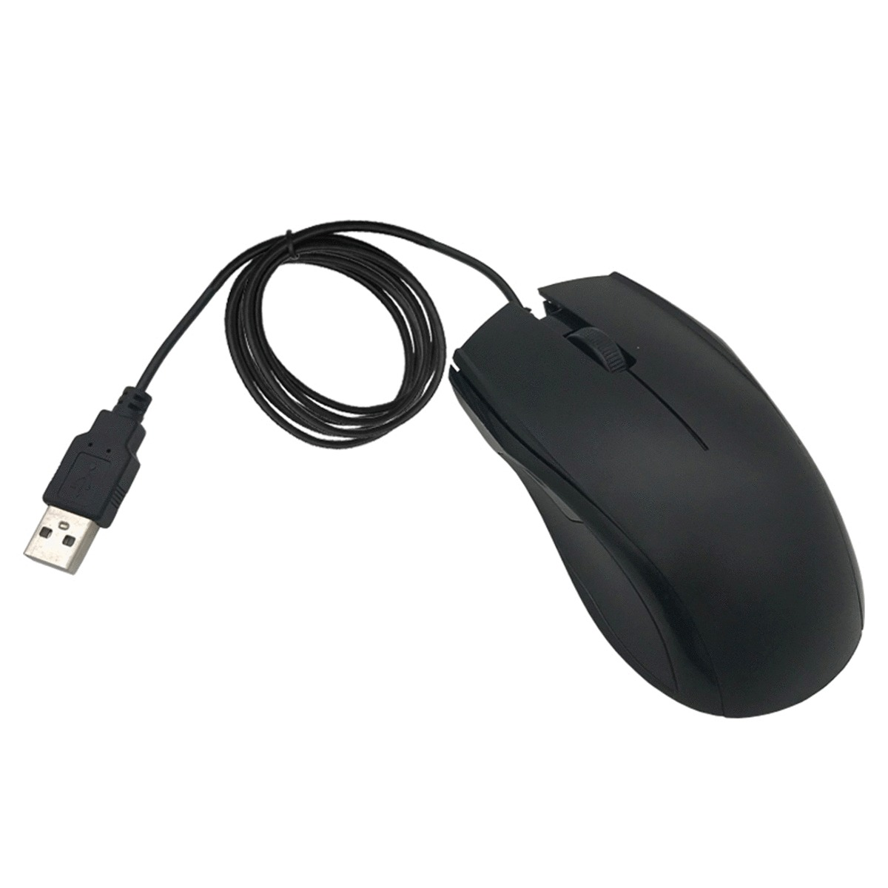
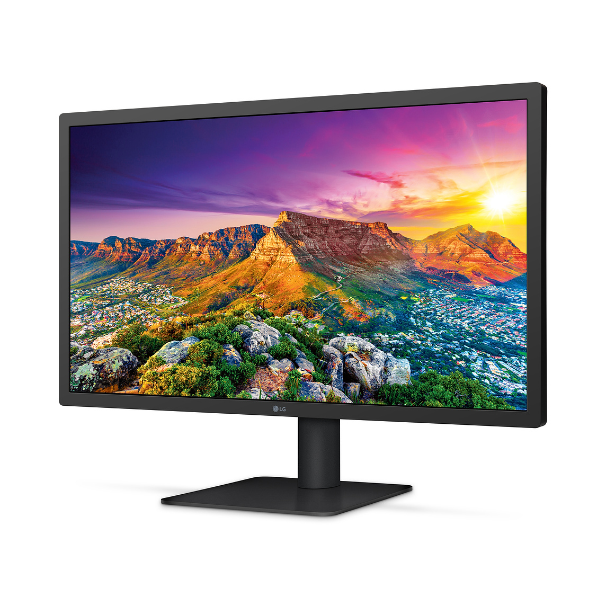
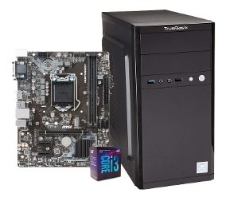
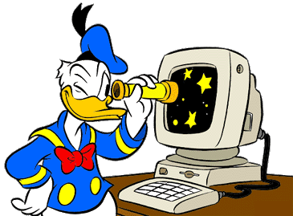

|
|
|
|
|
|
|---|
| Teclado | Mouse | Monitor | Unidad Central de Proceso |
El teclado o keyboard en ingles es un dispositivo de entrada que permite dar instrucciones mediante simbolos de funciones y alfabeto de lenguaje. Fue diseñada con el proposito de facilitar la escritura en las personas logrando mayor velocidad, distribuyendo las letras de manera que se pueda teclear con ambas manos. |
El mouse es un dispositivo de entrada que permite al usuario hacer elecciones por medio de un puntero que se visualiza en la pantalla, mismo que se controla con un dispositivo curvado, diseñado para ser ergonomico a la mano humana, el cual cuenta con principalmente dos botones y una rueda de desplazamiento. |
El Monitor o Pantalla es un dispositivo de salida que reproduce graficamente todo tipo de informacion procesada por la computadora. La unidad minima de representacion es el pixel y la resolucion es la cantidad de pixeles que se muestran en un espacio determinado. |
El CPU es la unidad central de procesamiento de una computadora, lo que significa que es el dispositivo que interpreta y ejecuta instrucciones ocupandose del proceso y control de datos. |
 |
 |  |  |
|  |
|---|